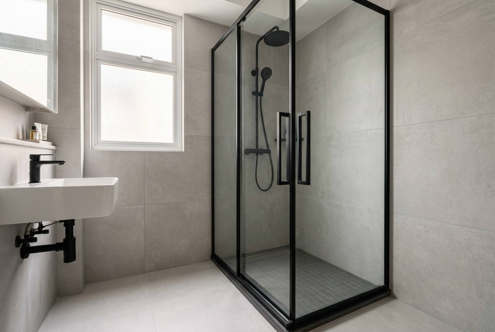

Shower screen installation cost in Singapore

A shower screen is one of the cheapest things you can do to a Singapore toilet that actually changes how you live in it, and the price swing between the two sensible options is enormous. A single fixed glass panel runs roughly S$300 to S$450 per toilet. A full enclosure with an opening door runs roughly S$900 to S$1,400 per toilet. That is a three-fold difference for the same tiles, the same plumbing and the same afternoon of work, so it is worth understanding what the extra money buys before you ask anyone to quote.
The three ways to close off a shower
Almost every HDB toilet ends up with one of these. They are not really competing products; they solve different amounts of the same problem.
1. Fixed panel (also called a splash panel or walk-in panel)
One sheet of tempered glass, fixed to the wall and the floor with slim profiles, standing between the shower and the rest of the room. No door, no track, no moving parts. It stops the sideways spray that soaks your vanity and your toilet roll. It does not fully contain steam or the water that runs along the floor.
This is the right answer more often than people expect, especially in a compact HDB toilet where a swinging door would foul the WC or the basin.
2. Partial enclosure (panel plus a short door)
A fixed panel with a hinged or pivoting return door, closing maybe two thirds of the opening. A middle tier: better containment than a bare panel, less glass and less hardware than a full enclosure.
3. Full enclosure
Glass on the open sides plus an opening door, boxing the shower in completely. This is what you want if the toilet is small enough that steam is the real problem, if you have a dry area you genuinely need to keep dry, or if someone in the household has mobility issues and a wet floor is a hazard rather than a nuisance.
Framed, semi-frameless and frameless
Cutting across all three: how much aluminium is around the glass. Framed is the workhorse and the cheapest, with a visible profile on every edge. Semi-frameless keeps profiles on the fixed edges and leaves the door edges bare. Frameless uses thicker glass (usually 10 mm) held on brackets, looks the best, costs the most and is the least forgiving of a wall that is out of plumb, which most HDB walls are.
Shower screen cost in Singapore (2026)
Per toilet, supplied and installed onto existing finished tiles.
| What you are fitting | Indicative cost (SGD) | Notes |
|---|---|---|
| Fixed panel only, framed | $300 – $450 | Recent RK E&C quote: 2 toilets for $635, so about $318 each |
| Fixed panel only, black frame | $340 – $500 | Same quote: 2 toilets for $715, about $358 each |
| Partial enclosure, panel plus short door | $650 – $900 | Middle tier; less glass and hardware than a full box |
| Full enclosure with opening door, framed | $900 – $1,400 | Same quote: 2 toilets for $1,975, about $988 each |
| Full enclosure, black frame | $950 – $1,500 | Same quote: 2 toilets for $2,075, about $1,038 each |
| Frameless enclosure, 10 mm glass | $1,400 – $2,600 | Thicker glass, heavier hardware, needs a true wall |
| Bathtub screen (single or bi-fold) | $400 – $900 | Fixed to the tub rim, not the floor |
| Glass replacement only, existing frame reused | $250 – $500 | Viable if the profiles and hardware are sound |
| Removal and disposal of an old screen | $60 – $150 | Often waived when a new screen is fitted the same day |
Two things drive the number more than anything else: whether there is a door, and how much hardware hangs off the glass. Glass is comparatively cheap. Hinges, handles, magnetic seals, a bottom track and the labour to get all of it plumb are not.
A real 2026 quote, both options priced
In August 2026 we quoted a two-toilet flat at Plantation Creek in Tengah. The owner could not decide between panels and full enclosures, so we priced both, in both frame finishes, on one page. The figures below are that quotation exactly.
| Item (2 toilets) | Normal aluminium frame | Black frame |
|---|---|---|
| Fixed panels, 1 per toilet, no door | $635 | $715 |
| Full shower screens, complete enclosure with door | $1,975 | $2,075 |
| Kitchen sliding door, clear tempered glass, 1 no | $1,675 | $1,775 |
Read the first two rows together, because that is the decision. S$635 against S$1,975 for the same two toilets. The enclosure costs about three times the panel, and every dollar of the difference is doors, hinges, seals and the extra glass to close the box.
The owner also wanted a glass sliding door on the kitchen entrance, which we priced on the same sheet. Because the kitchen door and the toilet works would be one visit and one set of site measurements, we took S$200 off when both were confirmed together. That is the general rule with glass work: the mobilisation and the measure are a fixed cost, so a second item on the same visit is always cheaper than a second visit. If a kitchen or utility door is on your list too, our guide to sliding door installation in Singapore covers the track systems and what they cost.
Fixed panel or full enclosure?
The honest test is not aesthetic, it is about where the water actually goes.
- A fixed panel is enough when the shower sits in a corner, the floor already falls to the trap, and your complaint is spray landing on the vanity or the toilet seat. This describes most HDB common bathrooms.
- You want the full enclosure when the toilet is small and steams up badly, when there is a dry zone (a laundry point, a storage niche, a WC you want usable while someone showers) that has to stay dry, or when a wet floor is a genuine slip risk.
- Neither will help if the floor does not fall to the trap. Water pooling away from the drain is a screed problem, not a screening problem, and glass will simply trap it on the wrong side. Have that checked before you spend anything.
One trap worth naming: a full enclosure in a very small toilet can make it feel like a phone box and slows down drying, because the air does not move. If your toilet has no window and a weak exhaust, a panel plus a working extract fan often beats a sealed box.
What a black frame actually costs
Black framed glass has been the dominant look in Singapore for a few years now, and the premium is smaller than most people assume. From the quote above:
- Fixed panels: S$80 more for two toilets, so S$40 a panel.
- Full enclosures: S$100 more for two toilets, so S$50 a screen.
- Kitchen sliding door: S$100 more for the single door.
So roughly 5% to 13% on top, depending on the item. That is a powder-coated finish on the profiles and matching black handles, hinges and fittings rather than the mill-finish aluminium. It is a fair price for the look, and the one practical caveat is that black profiles show limescale and dried soap more visibly than silver does. If nobody in the house is going to squeegee the glass, silver hides neglect better.
Glass, hardware and what actually fails
Tempered glass, no exceptions. Shower screens are safety-critical glazing. Tempered (toughened) glass is four to five times stronger than ordinary annealed glass and, when it does break, crumbles into blunt granules rather than shards. Screens are typically 8 mm in framed work and 10 mm frameless. Ask to see the permanent stamp etched in a corner of the pane, and treat any quote that will not name the thickness as a quote for something else.
What fails on a shower screen, in order of how often we are called out for it:
- Silicone. The seal at the wall and floor junction goes mouldy and then lets water behind the profile. This is a maintenance item, not a defect. Our guide to regrouting and silicone covers replacing it.
- The bottom seal strip on the door. A rubber wiper that goes hard and stops sweeping the water back inside. Cheap and replaceable.
- Hinges and rollers. Under-specified hardware sags, and a sagging door stops meeting its magnetic catch. This is where the difference between a cheap screen and a good one shows up, usually in year two or three.
- The glass itself. Rare. Almost always the result of a hard knock on an exposed edge or an over-tightened fixing, not a manufacturing fault.
Spontaneous breakage of tempered glass does happen and is not a myth, but it is uncommon. If the screen sits over a bath or where someone could fall through it, a safety film on the inside face is worth the small extra.
Drilling, floor fixings and your waterproofing
This is the part of a shower screen job that can quietly cost you thousands, and almost nobody asks about it.
Under your bathroom tiles is a waterproofing membrane. It is the only thing stopping shower water reaching the slab and then your neighbour's ceiling. Fixing a screen means drilling into tiles, and a floor fixing goes straight through the tile, through the screed and potentially through that membrane.
How we handle it, and what to insist on from anyone else:
- Fix to walls wherever the design allows. Wall fixings sit well above the wet zone and away from the ponding water.
- Minimise floor penetrations. A well-designed panel needs few or none; the glass can be carried on the wall profile and bedded on silicone at the floor.
- Seal every penetration that is unavoidable. Silicone into the hole before the plug goes in, not just around the fitting afterwards.
- Drill on slow speed with no hammer action. Hammer drilling porcelain tile cracks it, and a cracked tile in a wet area is a leak waiting to happen.
If your bathroom was waterproofed recently, check the terms before anyone drills. Some waterproofing warranties are void once the membrane is penetrated by another trade. And if the toilet is being retiled anyway, install the screen after the waterproofing and tiling are complete and cured, never before. Our HDB toilet renovation cost guide sets out the full sequence.
HDB rules and permits
Fitting a shower screen to an existing finished bathroom is not hacking and does not alter the structure, so it does not require a renovation permit on its own. What does need attention is anything around it: removing a kerb, changing floor levels, retiling, or redoing waterproofing all fall under HDB renovation guidelines, and toilet waterproofing in particular has to be done by a contractor on HDB's Directory of Renovation Contractors. Noise-generating work has its permitted hours regardless of the job size. If a screen is all you are doing, none of this bites, and the whole thing is a half-day visit.
Measuring and installation day
Shower screens are made to your opening, not bought off a shelf, so the process is short but has a fixed shape.
- Site measure. Roughly half an hour. We measure the opening at three heights, because HDB walls are rarely plumb and the glass has to be cut to the tightest of the three. This is also when the floor fall gets checked.
- Confirmation. Glass size, frame finish, door swing direction and handle type are fixed here. Tempered glass cannot be cut or drilled after toughening, so a change after this point means a new pane.
- Fabrication. Usually five to ten working days for the glass to be cut and toughened.
- Installation. Two to four hours for a panel, half a day for a full enclosure in two toilets.
- Curing. Leave the silicone 24 hours before the shower is used. Every failed seal we get called back to was used the same evening.
Get the door swing right at step two. In a compact toilet the door has to clear the WC, the basin and the bin, and it is a decision that cannot be reversed once the hinges are drilled into tile.
Frequently asked questions
How much does a shower screen cost in Singapore?
About S$300 to S$450 per toilet for a framed fixed panel and S$900 to S$1,400 for a full enclosure with a door. A real August 2026 RK E&C quote for a two-toilet flat came to S$635 for panels and S$1,975 for full enclosures, both supplied and installed.
Is a fixed panel enough, or do I need a full enclosure?
A fixed panel is enough for most HDB common bathrooms, where the shower sits in a corner and the problem is spray reaching the vanity. Choose the full enclosure when steam is the issue, when a dry zone has to stay dry, or when a wet floor is a slip risk. Neither fixes a floor that does not fall to the trap.
How much more is a black frame?
Around S$40 to S$50 per screen, and S$100 on a larger door. On the 2026 quote above, black frames added S$80 across two fixed panels and S$100 across two full enclosures, roughly 5% to 13%. Black shows limescale more than silver does.
What thickness of glass should a shower screen be?
8 mm tempered for framed and semi-frameless screens, 10 mm tempered for frameless. It must be tempered, and the pane should carry a permanent etched stamp in one corner. If a quote does not state the thickness, ask before comparing it with anything else.
Will installing a shower screen damage my waterproofing?
It can, if it is done carelessly. Floor fixings pass through the tile and screed and can reach the waterproofing membrane. Keep fixings on the walls where the design allows, seal any floor penetration inside the hole rather than only around it, and drill on slow speed without hammer action. Check your waterproofing warranty terms first if the bathroom was done recently.
How long does installation take?
Five to ten working days for the glass to be cut and toughened after the site measure, then two to four hours on site for a single panel or about half a day for full enclosures in two toilets. Leave the silicone to cure 24 hours before using the shower.
Getting it done by RK E&C
RK E&C is a Singapore-registered renovation and handyman company (UEN 202442767D) fitting shower screens, fixed panels and glass doors in HDB flats and condos island-wide, as standalone work or as part of a toilet renovation. It sits alongside the rest of our renovation and handyman services.
Two things we do differently. First, we price both options. If you are torn between a panel and an enclosure we will quote both, in both frame finishes, on one page, the way we did for the Tengah job above, so you compare two numbers instead of guessing. Second, we will tell you when the cheaper option is the right one. If your floor falls properly and the shower is in a corner, a S$318 panel solves your problem and we would rather fit that than sell you a S$988 enclosure you will find claustrophobic.
Because we also handle the waterproofing, tiling and regrouting around it, the fixing detail is ours to get right rather than something you have to police between two trades. Send photos of the toilet with rough dimensions via our contact form or WhatsApp and we will come and measure, then quote a fixed itemised price. Browse our other guides for the rest of the trades.
Wet toilet floor driving you mad?
A free site measure, both options priced side by side, and an honest answer on whether a fixed panel will do the job before you pay for a full enclosure. Island-wide, HDB and condo.
Prices are indicative of the Singapore market in 2026 and are not a quotation. The S$635, S$715, S$1,975, S$2,075, S$1,675 and S$1,775 figures are lines from an actual RK E&C quotation dated 28 August 2026 for a two-toilet flat, and include supply, delivery, labour and installation. Final pricing follows an on-site measure.